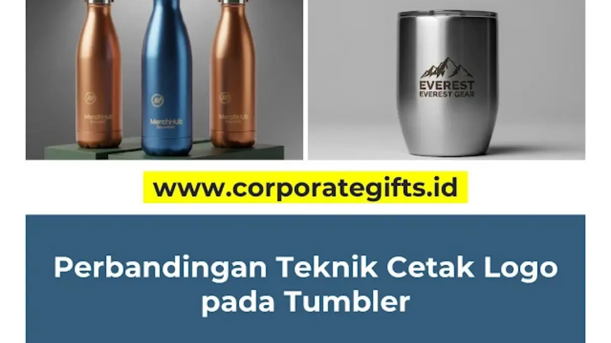

Corporate Gifts ID - Perbedaan utama antara laser grafir dan print UV terletak pada cara logo diaplikasikan ke tumbler: laser grafir mengukir logo langsung ke permukaan material sehingga hasilnya permanen namun hanya satu warna, sedangkan print UV mencetak tinta full color di atas permukaan sehingga bisa menampilkan gradasi warna dan detail foto namun sedikit kurang tahan terhadap goresan benda tajam.
Laser grafir cocok untuk logo satu warna yang mengutamakan kesan mewah dan keawetan seumur hidup, sementara print UV lebih tepat untuk logo berwarna, gradasi, atau ilustrasi yang rumit. Memahami perbedaan ini akan membantu Anda memilih teknik cetak logo tumbler yang paling sesuai dengan kebutuhan brand dan anggaran perusahaan Anda.
Poin Kunci Perbandingan Cetak Tumbler:
- Laser Grafir: Mengikis lapisan cat bodi tumbler hingga lapisan stainless steel, permanen seumur hidup, tanpa warna (monokrom silver elegan).
- Print UV: Tinta digital dikeraskan sinar ultraviolet seketika, resolusi tinggi, mampu mereproduksi logo full color dan gradasi rumit.
- Daya Tahan Fisik: Grafir tahan goresan ekstrem seumur produk, sedangkan print UV tahan cuci harian namun sensitif terhadap gesekan benda tajam logam.
- Efisiensi Anggaran: Grafir sangat terjangkau untuk monokrom premium, print UV jauh lebih hemat untuk cetak desain multi-warna kompleks.
Apa Itu Laser Grafir dan Karakteristiknya
Laser grafir adalah proses mengikis lapisan cat terluar dari permukaan tumbler menggunakan sinar laser berpresisi tinggi untuk menampilkan warna asli material di bawahnya, biasanya warna silver dari stainless steel. Proses ini tidak menggunakan tinta sama sekali, sehingga hasilnya menyatu langsung dengan bodi tumbler.
Kelebihan Laser Grafir
- Hasil super awet dan permanen: Karena logo diukir ke dalam produk, hasilnya tidak akan pernah pudar, mengelupas, atau luntur. Ini adalah solusi branding seumur hidup.
- Tampilan elegan dan mewah: Hasil grafir memberikan kesan yang sangat premium, minimalis, dan profesional bagi institusi.
- Tahan gores dan anti luntur: Sangat tangguh terhadap goresan kunci, pencucian rutin berulang, dan paparan suhu minuman panas maupun dingin.
Kekurangan Laser Grafir
- Tidak bisa berwarna: Hasilnya akan selalu mengikuti warna material dasar tumbler, umumnya silver metalik.
- Terbatas pada material tertentu: Teknik ini paling ideal untuk tumbler berbahan metal seperti stainless steel SUS304 dan aluminium.
Apa Itu Print UV dan Keunggulannya
Print UV adalah proses mencetak gambar atau logo secara digital langsung ke permukaan tumbler menggunakan tinta khusus, yang kemudian dikeraskan seketika oleh sinar ultraviolet setelah disemprotkan dari kepala nozzle cetak berkecepatan tinggi.
Kelebihan Print UV
- Hasil full color dan gradasi: Print UV mampu mereproduksi logo korporat dengan warna kompleks, gradasi warna halus, bahkan foto resolusi tinggi.
- Detail sangat tajam: Resolusi cetaknya mencapai 1200 dpi, mampu menampilkan teks kecil, barcode, dan detail tipografi terkecil dengan sangat tajam.
- Bisa diaplikasikan di berbagai material: Teknik ini sangat fleksibel dan bisa diterapkan di hampir semua permukaan, mulai dari stainless steel, plastik BPA-free, kaca borosilikat, hingga kayu bambu alami.
Kekurangan Print UV
- Kurang tahan goresan benda tajam: Meskipun sangat awet untuk pemakaian normal dan pencucian lembut, lapisan tinta UV bisa tergores jika terbentur kunci atau benda runcing lainnya.
- Persepsi estetika: Bagi sebagian eksekutif, hasil cetak tinta terasa sedikit modern-kasual dibanding ukiran klasik metalik dari grafir.

Mesin UV flatbed rotari modern memungkinkan pencetakan logo melingkar 360 derajat dengan warna cerah dan daya lekat tinta yang kuat.
Tabel Perbandingan Laser Grafir vs Print UV Tumbler
Agar memudahkan evaluasi pengadaan merchandise tumbler kantor Anda, berikut tabel komparasi parameter teknis kedua metode:
| Aspek Evaluasi | Laser Grafir | Print UV Digital |
|---|---|---|
| Hasil Warna | Satu warna (monokrom silver material) | Full color, gradasi multi-warna, separasi foto |
| Tingkat Keawetan | Permanen seumur hidup bodi tumbler | Sangat awet, tahan cuci harian (hindari goresan runcing) |
| Kesan Estetika | Elegan, mewah, profesional, minimalis | Tajam, dinamis, cerah, modern |
| Fleksibilitas Desain | Terbatas pada garis kontur vektor monokrom | Hampir tanpa batas, dari teks halus hingga ilustrasi kompleks |
| Kesesuaian Material | Terbaik pada stainless steel & aluminium coating | Sangat fleksibel (metal, plastik, kaca, akrilik, kayu) |
| Efisiensi Anggaran | Sangat ekonomis untuk logo monokrom | Ekonomis untuk desain multi-warna tanpa biaya film terpisah |
Panduan Keputusan: Kapan Memilih Grafir atau Print UV?
Pilihan terbaik ditentukan oleh pedoman identitas merek (brand guideline) dan tujuan acara korporat Anda:
Pilih Laser Grafir Jika:
- Anda menginginkan hasil akhir yang timeless, prestisius, dan memiliki ketahanan abadi.
- Logo perusahaan Anda memiliki versi monokrom yang kuat dan diakui.
- Tumbler pilihan Anda berbahan stainless steel dinding ganda (double wall vacuum).
- Keawetan absolut adalah prioritas utama, seperti pada paket souvenir eksklusif untuk klien VIP.
Pilih Print UV Jika:
- Identitas visual brand Anda mewajibkan kesesuaian palet warna Pantone / CMYK tertentu secara presisi.
- Desain suvenir memuat maskot, ilustrasi tema tahunan, atau gradasi warna digital.
- Media tumbler berbahan dasar plastik ramah lingkungan, botol kaca, atau tumbler metal berlapis enamel cerah.
Kesimpulan: Menentukan Karakter Branding Lewat Teknik Cetak
Tidak ada satu teknik yang lebih unggul secara mutlak; yang ada hanyalah metode yang paling selaras dengan identitas brand dan sasaran penerima Anda. Grafir adalah pilihan tepat untuk keanggunan dan keabadian, sementara print UV unggul dalam fleksibilitas warna, ketajaman detail, dan ekspresi visual yang dinamis.
Memilih teknik pencetakan yang tepat merupakan langkah penentu dalam memproduksi tumbler custom logo yang bernilai tinggi. Keputusan teknis ini merupakan pilar penting strategi souvenir kantor perusahaan Anda agar senantiasa mencerminkan profesionalisme tertinggi.
Pertanyaan Teknis Seputar Grafir dan Print UV Tumbler (FAQ)

Ditulis oleh: Vendor Souvenir Kantor
Corporate Merchandise SpecialistPraktisi pengadaan cinderamata korporat dan spesialis teknik cetak merchandise terpadu dengan pengalaman lebih dari 8 tahun melayani ratusan institusi di Indonesia.
Lihat Profil Lengkap & Panduan Lainnya